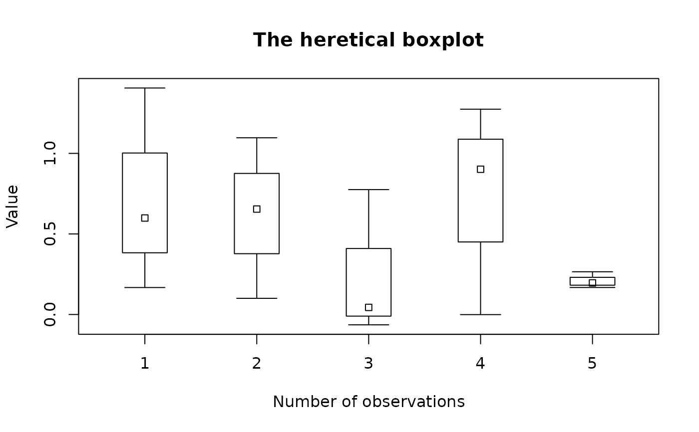

Display a sort of box plot
box.heresy.Rdbox.heresy displays a box plot in which a symbol represents a measure of central tendency, a surrounding box that represents an "inner" measure of dispersion (e.g. standard error) and whiskers represent an "outer" measure of dispersion (e.g. standard deviation). The function is pretty basic at this time and will probably change a bit.
The argument "intervals" is particularly important, and can wreak havoc on the resulting plot. The default of FALSE means that the values passed to the inner and outer measures of dispersion are absolute, not intervals away from the measure of central tendency. Mixing absolute and relative values will always lead to errors and typically a very strange looking plot. It is probably easiest to calculate the absolute values before calling box.heresy. The first and second examples show how intervals=FALSE and intervals=TRUE can be used.
One of the first changes is to allow varying box widths. The user can specify the box widths as a vector of numeric values at least as long as the number of boxes to be displayed. The usual reason for doing this is to display widths that are proportional to the number of observations. A useful start is to pass boxwidth as the number of observations and let the function work it out.
Usage
box.heresy(x,y,uinner,linner,ulim,llim,boxwidth=NULL,
intervals=FALSE,arrow.cap=NULL,pch=22,main="",xlab="",ylab="",
xaxlab=NULL,col="white",do.first=NULL,...)Arguments
- x,y
Vectors of numeric values representing measures of central tendency.
- uinner,linner
Vectors of numeric values representing "inner" measures of dispersion.
- ulim,llim
Vectors of numeric values representing "outer" measures of dispersion.
- boxwidth
Optional widths for the boxes.
- intervals
Whether the values for dispersion are intervals (TRUE) or absolute limits (FALSE).
- arrow.cap
The width of the cap on the "whiskers" relative to the width of the plot. Defaults to the same width as the outer box.
- pch
The symbol to be used to represent the measure(s) of central tendency in the box.
- main
The title for the plot (i.e. main).
- xlab,ylab
The x and y axis labels.
- xaxlab
Optional labels for the boxes.
- col
The fill colors for the "inner" rectangles.
- do.first
An expression that will be evaluated before anything is displayed.
- ...
additional arguments passed to the dispersion function.
Examples
y1<-runif(20,2,10)
y2<-rnorm(30,6,2)
y3<-sample(0:20,40,TRUE)
Ns<-c(20,30,40)
ymean<-c(mean(y1),mean(y2),mean(y3))
y1inner<-quantile(y1,probs=c(.16,.84))
y2inner<-c(ymean[2]+sd(y2),ymean[2]-sd(y2))
y3inner<-quantile(y3,probs=c(.16,.84))
uinner<-c(y1inner[1],y2inner[1],y3inner[1])
linner<-c(y1inner[2],y2inner[2],y3inner[2])
ulim<-c(max(y1),max(y2),max(y3))
llim<-c(min(y1),min(y2),min(y3))
box.heresy(ymean,uinner=uinner,linner=linner,ulim=ulim,llim=llim,boxwidth=Ns,
main="Boxplot of means, central spread and range",xlab="Distribution",
xaxlab=c("Uniform","Normal","Sample"))
#> Warning: 'length', 'angle', or 'code' greater than length 1; values after the first are ignored
#> Warning: 'length', 'angle', or 'code' greater than length 1; values after the first are ignored
#> Warning: 'length', 'angle', or 'code' greater than length 1; values after the first are ignored
#> Warning: 'length', 'angle', or 'code' greater than length 1; values after the first are ignored
#> Warning: 'length', 'angle', or 'code' greater than length 1; values after the first are ignored
#> Warning: 'length', 'angle', or 'code' greater than length 1; values after the first are ignored
y1outer<-
y<-runif(5)
ulim<-runif(5)
llim<-runif(5)
uinner<-ulim/2
linner<-llim/2
box.heresy(y,uinner=uinner,linner=linner,ulim=ulim,llim=llim,
intervals=TRUE,main="The heretical boxplot",
xlab="Number of observations",ylab="Value")
